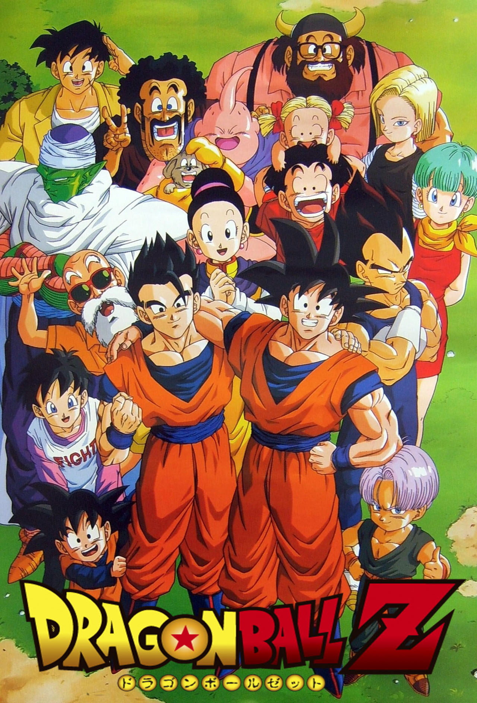
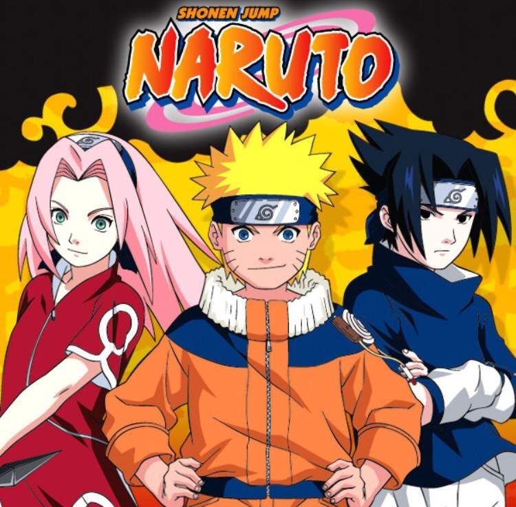
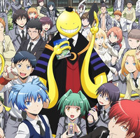

My Personal Favorites
My Hero Academia
Summary: Born without special powers in a world where 80% of the population has them, Izuku Midoriya still dreams of becoming a hero. An unexpected encounter with the legendary hero All Might gives him a chance to change his fate, but first he must master his newly-acquired Quirk in order to become the number 1 hero.
Dragon Ball Z
Summary: Dragon Ball Z continues the adventures of Goku, who, along with his companions, defend the Earth against villains ranging from aliensFrieza, androids, Cell and other creatures Majin Buu. While the original Dragon Ball anime followed Goku from childhood to early adulthood, Dragon Ball Z is a continuation of his adult life, but at the same time parallels the life of his son, Gohan, as well as the development of his rival Vegeta.

Naruto
Summary: Naruto Uzumaki, an adolescent ninja, struggles as he searches for recognition and dreams of becoming the Hokage, the village's leader and strongest ninja. Many years ago, in the hidden village of Konoha, lived a great demon fox. When it swung one of it's nine tails, a tsunami occurred. The fourth hokage sealed this demon fox inside a boy in exchange for his own life. Naruto was that boy, and he grew up with no family, and the villagers hated him thinking that he himself was the demon fox. Naruto's dream is to become Hokage, and have the villagers acknowledge him.

Assassination Calssroom
Sumarry: A powerful creature claims that within a year, Earth will be destroyed by him, but he offers mankind a chance by becoming a homeroom teacher where he teaches his students about how to kill him.
